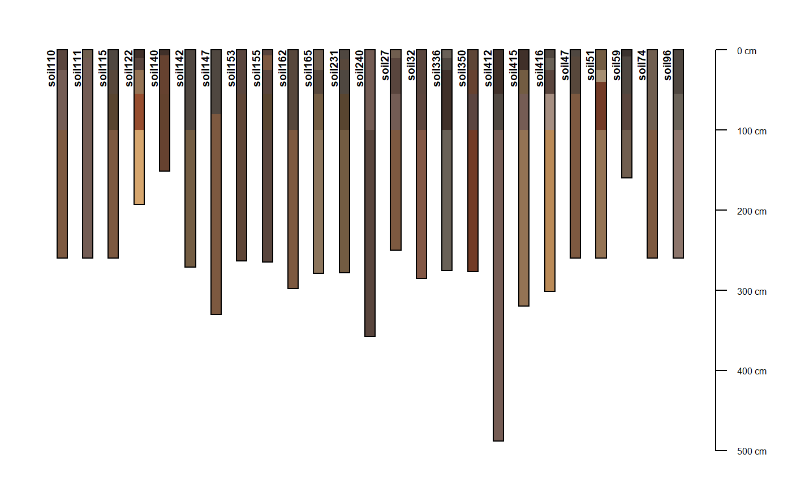
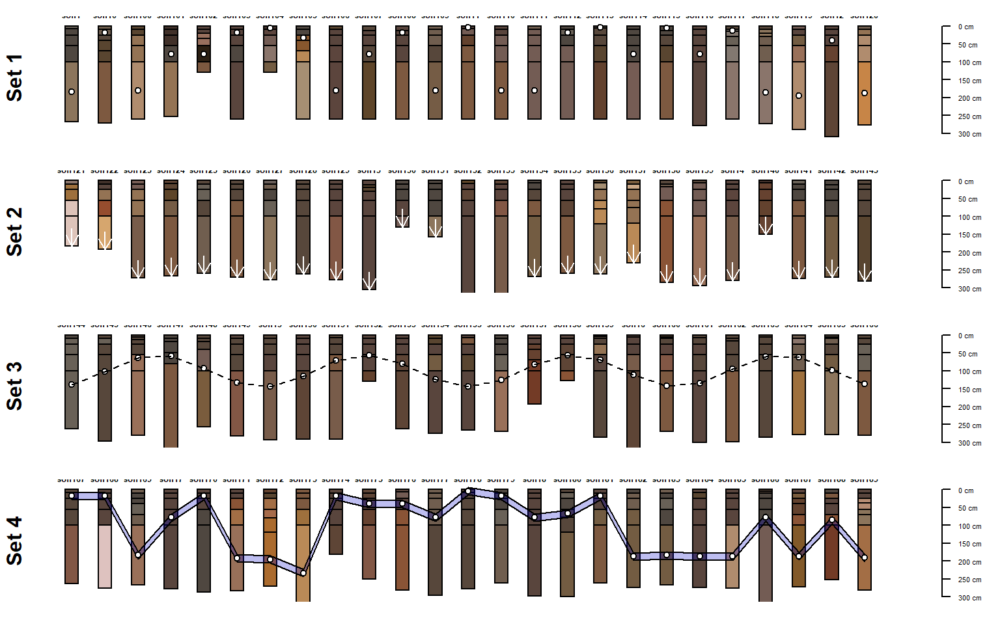

Sample Soil Database #5
sp5.Rd296 Soil Profiles from the La Rochelle region of France (F. Carre and Girard, 2002)
data(sp5)
Format
Formal class 'SoilProfileCollection' [package "aqp"] with 6 slots ..@ idcol : chr "soil" ..@ depthcols: chr [1:2] "top" "bottom" ..@ metadata :'data.frame': 1 obs. of 1 variable: .. ..$ depth_units: chr "cm" ..@ horizons :'data.frame': 1539 obs. of 17 variables: .. ..$ soil : soil ID .. ..$ sand : sand .. ..$ silt : silt .. ..$ clay : clay .. ..$ R25 : RGB r-coordinate .. ..$ G25 : RGB g-coordinate .. ..$ B25 : RGB b-coordinate .. ..$ pH : pH .. ..$ EC : EC .. ..$ CaCO3 : CaC03 content .. ..$ C : C content .. ..$ Ca : Ca .. ..$ Mg : Mg .. ..$ Na : Na .. ..$ top : horizon top boundary (cm) .. ..$ bottom : horizon bottom boundary (cm) .. ..$ soil_color: soil color in r-friendly format ..@ site :'data.frame': 296 obs. of 1 variable: .. ..$ soil: chr [1:296] "soil1" "soil10" "soil100" "soil101" ... ..@ sp :Formal class 'SpatialPoints' [package "sp"] with 3 slots .. .. ..@ coords : num [1, 1] 0 .. .. ..@ bbox : logi [1, 1] NA .. .. ..@ proj4string:Formal class 'CRS' [package "sp"] with 1 slots .. .. .. .. ..@ projargs: chr NA
Details
These data are c/o F. Carre (Florence.CARRE@ineris.fr).
Source
296 Soil Profiles from the La Rochelle region of France (F. Carre and Girard, 2002). These data can be found on the OSACA project page (http://eusoils.jrc.ec.europa.eu/projects/OSACA/).
References
F. Carre, M.C. Girard. 2002. Quantitative mapping of soil types based on regression kriging of taxonomic distances with landform and land cover attributes. Geoderma. 110: 241--263.
Examples
library(scales)#> Warning: package ‘scales’ was built under R version 3.4.4data(sp5) par(mar=c(1,1,1,1)) # plot a random sampling of profiles s <- sample(1:length(sp5), size=25) plot(sp5[s, ], divide.hz=FALSE)#># plot the first 100 profiles, as 4 rows of 25, hard-coding the max depth layout(matrix(c(1,2,3,4), ncol=1), height=c(0.25,0.25,0.25,0.25)) plot(sp5[1:25, ], max.depth=300)#>#>#>#># 4x1 matrix of plotting areas layout(matrix(c(1,2,3,4), ncol=1), height=c(0.25,0.25,0.25,0.25)) # plot profiles, with points added to the mid-points of randomly selected horizons sub <- sp5[1:25, ] plot(sub, max.depth=300) ; mtext('Set 1', 2, line=-0.5, font=2)#>y.p <- profileApply(sub, function(x) { s <- sample(1:nrow(x), 1) h <- horizons(x); with(h[s,], (top+bottom)/2) }) points(1:25, y.p, bg='white', pch=21) # plot profiles, with arrows pointing to profile bottoms sub <- sp5[26:50, ] plot(sub, max.depth=300); mtext('Set 2', 2, line=-0.5, font=2)#>y.a <- profileApply(sub, function(x) max(x)) arrows(1:25, y.a-50, 1:25, y.a, len=0.1, col='white') # plot profiles, with points connected by lines: ideally reflecting some kind of measured data sub <- sp5[51:75, ] plot(sub, max.depth=300); mtext('Set 3', 2, line=-0.5, font=2)#>y.p <- 20*(sin(1:25) + 2*cos(1:25) + 5) points(1:25, y.p, bg='white', pch=21) lines(1:25, y.p, lty=2) # plot profiles, with polygons connecting horizons with max clay content (+/-) 10 cm sub <- sp5[76:100, ] y.clay.max <- profileApply(sub, function(x) { i <- which.max(x$clay) h <- horizons(x) with(h[i, ], (top+bottom)/2) } ) plot(sub, max.depth=300); mtext('Set 4', 2, line=-0.5, font=2)#>polygon(c(1:25, 25:1), c(y.clay.max-10, rev(y.clay.max+10)), border='black', col=rgb(0,0,0.8, alpha=0.25))# close plot dev.off()#> null device #> 1# plotting parameters yo <- 100 # y-offset sf <- 0.65 # scaling factor # plot profile sketches par(mar=c(0,0,0,0)) plot(sp5[1:25, ], max.depth=300, y.offset=yo, scaling.factor=sf)#># optionally add describe plotting area above profiles with lines # abline(h=c(0,90,100, (300*sf)+yo), lty=2) # simulate an environmental variable associated with profiles (elevation, etc.) r <- vector(mode='numeric', length=25) r[1] <- -50 ; for(i in 2:25) {r[i] <- r[i-1] + rnorm(mean=-1, sd=25, n=1)} # rescale r <- rescale(r, to=c(80, 0)) # illustrate gradient with points/lines/arrows lines(1:25, r) points(1:25, r, pch=16) arrows(1:25, r, 1:25, 95, len=0.1) # add scale for simulated gradient axis(2, at=pretty(0:80), labels=rev(pretty(0:80)), line=-1, cex.axis=0.75, las=2) # depict a secondary environmental gradient with polygons (water table depth, etc.) polygon(c(1:25, 25:1), c((100-r)+150, rep((300*sf)+yo, times=25)), border='black', col=rgb(0,0,0.8, alpha=0.25)) ## # sample 25 profiles from the collection s <- sp5[sample(1:length(sp5), size=25), ] # compute pair-wise dissimilarity d <- profile_compare(s, vars=c('R25','pH','clay','EC'), k=0, replace_na=TRUE, add_soil_flag=TRUE, max_d=300)#>#># keep only the dissimilarity between profile 1 and all others d.1 <- as.matrix(d)[1, ] # rescale dissimilarities d.1 <- rescale(d.1, to=c(80, 0)) # sort in ascending order d.1.order <- rev(order(d.1)) # plotting parameters yo <- 100 # y-offset sf <- 0.65 # scaling factor # plot sketches par(mar=c(0,0,0,0)) plot(s, max.depth=300, y.offset=yo, scaling.factor=sf, plot.order=d.1.order)#># add dissimilarity values with lines/points lines(1:25, d.1[d.1.order]) points(1:25, d.1[d.1.order], pch=16) # link dissimilarity values with profile sketches via arrows arrows(1:25, d.1[d.1.order], 1:25, 95, len=0.1) # add an axis for the dissimilarity scale axis(2, at=pretty(0:80), labels=rev(pretty(0:80)), line=-1, cex.axis=0.75, las=2)